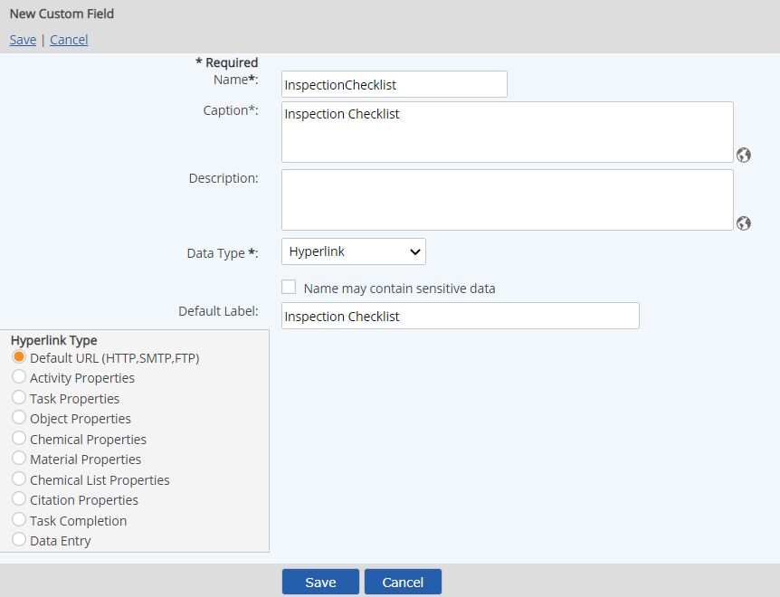
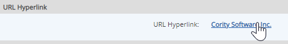
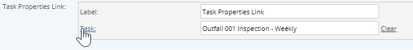
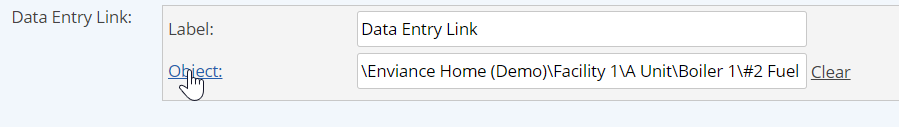

Hyperlink fields can be used to create links from the Properties View of an object. Link types include external URLs, as well as links to system objects. The URL or object to be linked to is specified when the custom field is applied to an object. Links to object properties are to the view properties page (not edit).
Default URL (HTTP, SMTP, FTP): Creates a link to any valid external URL.
Activity Properties: Creates a link to the properties of an Activity.
Task Properties: Creates a link to the properties of a selected task.
Object Properties: Creates a link to the properties of a system object.
Chemical Properties: Creates a link to the properties of a chemical Chemical library.
Material Properties: Creates a link to the properties of a material in the Materials library
Chemical List Properties: Creates a link to the properties of a chemical list.
Citation Properties: Creates a link to the properties of a citation.
Task Completion: Creates a link to the task completion form for a selected task.
Data Entry: Creates a link to the initial data entry page for a selected parameter or parent object.
To create a hyperlink field:
For the Data Type, choose Hyperlink.

For the Default Label, enter the link text.
The default label is optional. The link text may be entered or edited when the custom field is applied to an object.
When the hyperlink field is applied to an object through a Custom Field Template, you can then specify the label and the URL for the link, or choose the system object to link to.
The Label is the text that will by hyperlinked.
For a URL hyperlink field: Enter a complete URL.

For a link to the properties of an object: Click Select to select the object you want to link to from the selection window.
For task links (task properties and task completion): Click Select. From the selection window, search for the task to link to.

For a Data Entry link: Click Select. From the selection window, you may select either a specific parameter, or a parent object to link to. The link will go to the initial data entry page, for standard Data Enter/Edit (not Quick Add).
